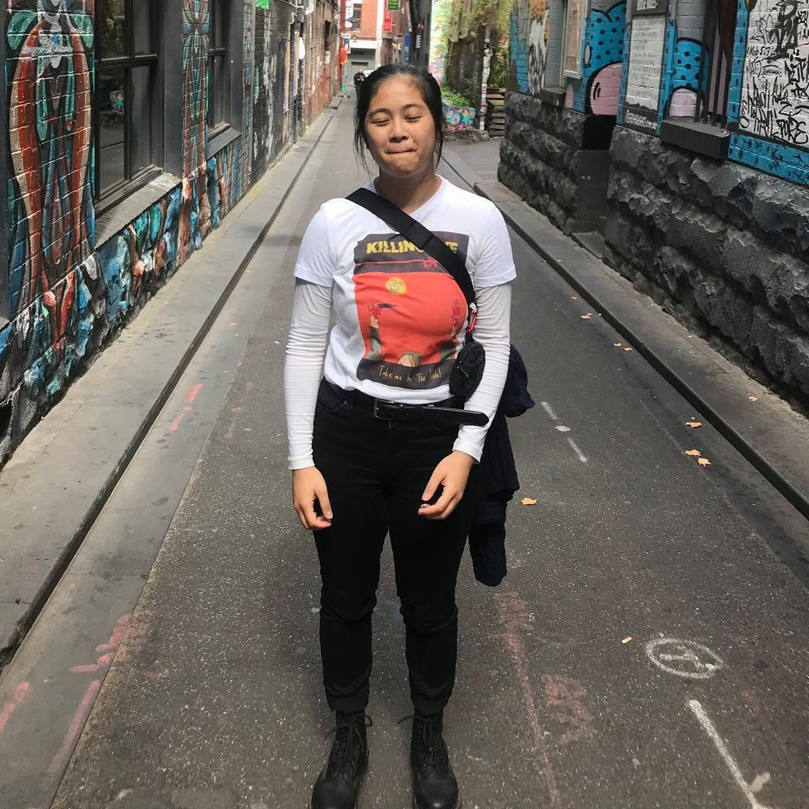
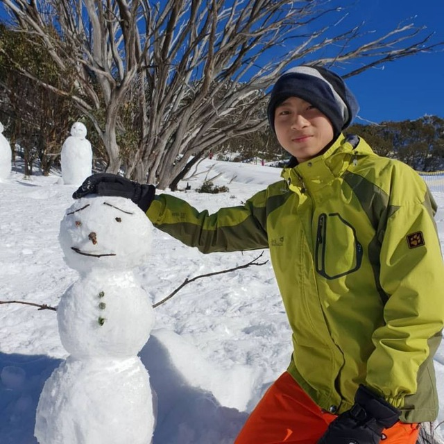

PERSONAL INFORMATION
Braydan Shalders S3781601
Braydan is a 21-year-old with a great interest in the world of IT. His family background is a mix of Irish, Scottish, British, Danish, and German.
A man that cannot be pigeonholed, he is adventurous and likes camping, rock climbing / bouldering, skating, surfing, snowboarding, acrobatics as well as competitive video games, programming, graphic design / web design, philosophy and learning languages.
Completed education consists of the completion of year 12, with a Certificate 3 in Music Technical Production and is currently undergoing a bachelor’s degree in information technology.
Carisse Wu Pey Ann S3886764
Carisse is our most worldly team member, currently based in sunny Malaysia. Her family is Chinese Malaysian and gets to celebrate Chinese New Year in February as well as Christmas in December. Being based in Malaysia has allowed her to participate in many different cultural celebrations, festivals, and public holidays.
A fun fact about Carisse is that she has become somewhat of a MasterChef during the lockdown, untapping her raw talents and nearly converting her home into a café! On top of that she enjoys taking pictures (especially of her great cooking).
Her interest in IT has come about due to her naturally inquisitive nature to try and find out the theory behind these technologies. The ongoing pandemic also spurred an interest as our reliance on technology such as e-commerce for food and groceries provided a real-world example of the importance of IT. As Carisse was previously in a bachelor of CS, she is no stranger to IT however and so has made her transition into the IT space much easier.
Daniel Nanthathammiko S3196237
Daniel has been around IT systems, software, and hardware development for the past 6 years full time due to his work on the commercial side in the tech sector.
During his youth, he was fortunate enough to be in a band signed to a record label with a regular touring schedule. However, this changed when he wanted to focus on studies and a career and so he was able to study at Deakin (BA in Media and Comm), USQ (AD in Spatial Science) and RMIT (Dip of Surveying) previously. This time around he has come back to RMIT to further his IT skills and understanding of programming.
As the IT “guru” at work, I’m always the one staying up to date on tech changes that can affect my company and industry as well as ways to implement new tech into our processes and systems.
Glenn Tang S3601278
Glenn is a mechanical keyboard aficionado who is easy going and there to help the team with whatever is needed.
Ever since high school, Glenn has been keen on computers and IT and so pursued it from a fairly young age. His interest in this field stemmed from playing video games (like many of us).
To highlight how keen Glenn follows his interests, he won the dux for IT when he graduated high school. Now that Glenn is at RMIT, he is refining his HTML and CSS usage to smash out the work in the Wildcats.

Harmony Kloppenburg S3658138
Harmony, like many Melbournians was born overseas (the Philippines to be exact) but has been here for most of her life. Her mother is Filipino, and father is Dutch/Australian, and even though you might assume she can speak 2 languages, unfortunately that’s not where her skills are.
Having graduated year 12 in 2016, she started her path studying a Bachelor of Health Science/Applied Science, she pivoted to an Undergrad Cert in IT.
She has varying hobbies such as Karate (brown belt!) and is an avid DnD player. Video games have been prominent throughout her life and has helped create bonds and friendships which has guided her to the path of IT.
A dawning moment for her that IT was the direction to take was during a time of feeling lost about her next moves. A friend had recently secured a IT role and their discussion about all things IT opened up her eyes to the industry as a possibility for her career.

Zhen Rong Xavier Tan S3784659
Xavier was born in Singapore but has spent most of his time studying overseas in China, and Australia. Graduating year 12 at the end of 2018, he went through 2 years of national service in Singapore. He is currently in his first year of university, studying for a Bachelor of Information Technology.
He has a keen interest in sports, J-Pop (despite not understanding the words) and video games but makes time for video games due to his continuous international moves. In saying that, he has made more time for activities such as rock climbing.
Xavier has had an interest in IT for as long as he can remember. All aspects of IT pique his interest and so is looking forward to seeing what specific branch will catch his eye. As of now, artificial intelligence stands out and is looking forward to potentially learning about AI in the future. He has experience in networking from the time he has spent in national service, as he was assigned to a military unit that maintained networks for the army nationwide, so hopefully he will be able to put that to good use in the future as well.